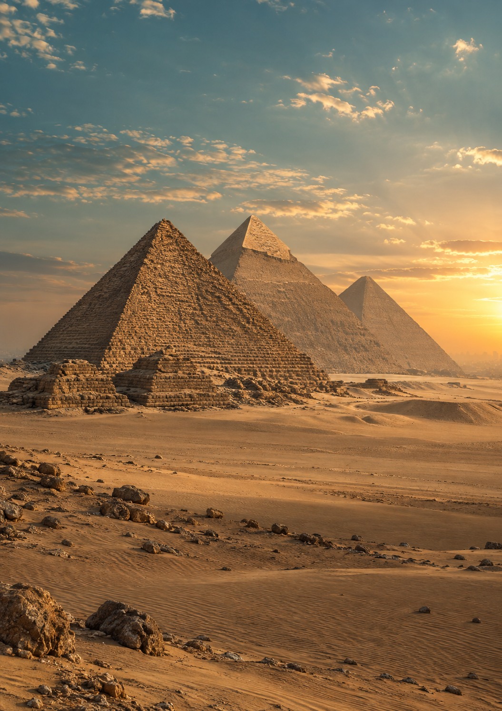

Bidesh and BeyondPre-Travel Guide · 2026
A Journey Through
Egypt
Ancient wonders, the Nile & the Red Sea
28 September — 8 October 2026
Cairo · Alexandria · Aswan · Luxor · Hurghada
Cover I of four

Pack a light layer for cooler evenings and air-conditioned transport.
Light clothing for daytime; keep a layer handy for waterfront evenings.
The hottest stop: plan early starts, water breaks and time in the shade.
Wear a hat and comfortable shoes; pace outdoor temple visits.
Pack a swimming costume or swimming shorts, a light shirt and sun protection for beach and pool time.
Your visa has been applied for by our travel company. Carry a printed copy of the issued visa with your passport. Ensure your passport has at least six months’ validity from arrival.
Carry US dollars (USD) from India. Keep the tipping and optional balloon amounts aside in USD. Exchange spending money for Egyptian pounds (EGP) in Egypt at authorised exchange counters or banks.
We recommend international roaming for this trip. Activate an Egypt-compatible roaming pack before leaving India so you can stay connected on your usual number. Confirm data, call allowances and validity with your provider.
Pack within 15 kg check-in baggage and 7 kg cabin baggage for the full journey. International flights allow 20 kg check-in, but the Kolkata–Mumbai domestic leg limits check-in baggage to 15 kg.
Your Trip Manager will coordinate hotel confirmations, daily travel arrangements and group meeting points. Save their contact number and reach out to them whenever you need help during the trip.